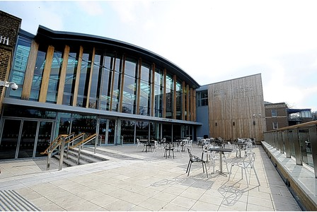

Entrepreneurial - having the perspective to see an opportunity and the talent to create value from that opportunity;
Action - the willingness to do something and the commitment to see it through even when the outcome is not guaranteed;
Us - a group of people who see themselves connected in some important way; individuals that are part of a greater whole.
"Impossible is just a big word thrown around by small men who find it easier to live in the world they've been given than to explore the power they have to change it. Impossible is not a fact. It's an opinion. Impossible is not a declaration. It's a dare. Impossible is potential. Impossible is temporary. Impossible is nothing."
-- Muhammad Ali

Percy Gee Building
University Road
Leicester
LE1 7RH
Telephone: 0116 223 1181